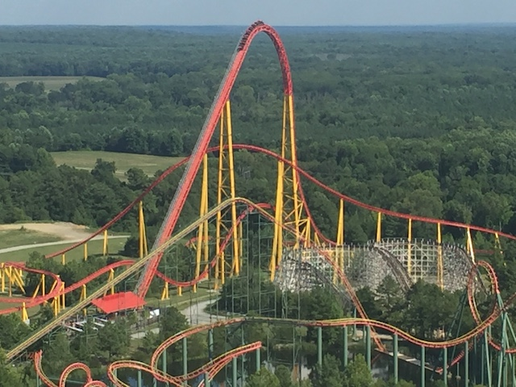

| |
Intimidator 305 Review

We're here at Kings Dominion, where we will be riding their star attraction, and one of the best coasters in the country. Intimidator 305. This is without a doubt, my favorite giga coaster. And you have to keep in mind, its main competition, Fury 325, is also one of the best coasters in America, and a Top 10 Coaster in its own right. Which by default, means that this also is a Top 10 Coaster. Because....DAMN!!! THIS RIDE IS SO F*CKING GOOD!!! DROOL!!! Hop in the cars, pull down the OTSRs (I know some will say that they're necesarry, and....I doubt it. But whatever), and then we hear the magic words. "Gentlemen! Start your engines!" Cheer, as we begin to climb the lifthill. Not a whole lot to check out aside from sky. I guess you can look at the other rides at Kings Dominion, but....yeah. The area of Virginia around the park is not that impressive. But like I said, that doesn't matter, because we reach the top before you know it (It's essentially as fast as the cable lifthill on Millenium Force, since....they're both cable lift hills). And....down the first drop you go. And.....I think it's safe to say that any first drop on a giga coaster, is GREAT!!! Honestly, I've loved the first drop on every single Giga Coaster I've ridden. Just a very steep drop, falling straight to the ground, and speed just POURING ON!!!! I'm loving it already. However, what happens next is what makes Intimidator 305 stand out from other giga coasters. We don't go into a hill. But rather, we go straight into a banked turn. After a 305 ft first drop, and travelling at 90 mph! So....you're gonna be experiencing A LOT of forces! No, not laterals surprisingly. But Postive Gs. This ride is REALLY heavy on the positive Gs. And....let me tell you something. This is unquestionably, without a doubt, the most intense element on any roller coaster. You think the Goliath Helix is intense!? NOTHING!!! The things that I call the "True Helix of Death?" NOT COMPARED TO THIS!!! The ONLY reason this isn't the True Helix of Death is because it's not a helix. But I guess we can call it the turn of death. Now I normally don't black out on coasters. Normally doesn't happen, but....Intimidator 305 was the one exception, where I didn't just grey out, but actually full on blacked out. DAMN!!! Now THAT is f*cking impressive. And it wasn't for a split second. I know on one of my rides, I was blind for like 5 seconds and didn't regain my sight until we were up on the airtime hill. Which may sound scary, but....I was enjoying it. It's probably the closest a roller coaster has come to a drug experience lol. Speaking of the airtime hill, we now have an airtime hill. And....I know this ride is mainly known for its Positive Gs. But there actually is a decent pop of airtime right here. You know, at this point, it almost seems like Intimidator 305 is just a Giga Mega-Lite. And while that would be awesome, that is not what I305 is. But what it is.....oh man is it great! DROOL!!! Head down the drop and down another swooping turn. Just roaring through, burning speed. Go through a tiny little airtime hill, that has no airtime. Where does the ride get crazy? Be patient. There's still more craziness to be had. Starting with this turn. This actually has a bit of snap and some laterals. And of course, we're still laying on the Positive Gs. When.....SNAP!!! This thing just ABRUPTLY changes directions. And.....GOD F*CKING DAMN!!! Some of the coolest and craziest laterals I have ever seen on a coaster! The closest I can come to describing this would be comparing it to agressive turns on Maverick. Another one of my favorite coasters. Except....to compare these turns to that on Maverick, which I LOVE, and are some of the best lateral sources on any coasters (I stand by that those turns would make a Wild Mouse commit suicide in shame). And for as great as those are, these top it. Just.....DAMN!!! I think this is the limit to wear a lateral is just fun, and venturing any further goes into human body can't handle this dangerous sh*t territory. It brings a big goofy-eyed grin to my face. Anyways, the ride goes through another tight agressive turn, since....that's what this ride is all about. Get more laterals and positive Gs as we head through another tight turn and SNAP!!! AGRESSIVE CHANGE IN DIRECTION!!! It would throw you like a rag-doll, but the OTSRs pin you in place (I think I get their purpose now). I love it!!! I love it!!!! And the adrenaline just pours on as we shread through another low to the ground turn, and head up into another airtime hill. Except....there's no airtime here. Also doesn't help that there's a trim right here. Awww. The one flaw with the ride. =( But it's OK. I STILL LOVE THIS THING!!! Head back down and up into another hill, and head through another curved turn. Still having fun, and.....SNAP!!! We do it again! OK, this one's not quite as strong, and has dipped below Maverick quality. But it's still really great laterals, and I'm loving every single second of this ride. And sadly, it's coming to an end. Head up another curved hill, and glide right into the brake run. Aww. I'm sad that it's over. But that's only because this ride is JUST SO F*CKING GOOD!!! OH MY GOD!!! COASTERGASM!!!! This has to be the most intense coaster I have ever ridden, and I love every single second of it. This probably is the coaster that pushes the limits of the human body the most. I know some enthusiasts complain that the ride is too intense (PUSSIES!!!), and the general public seems to be frightened of this ride, since it rarely seems to have a line (then again, the day I went wasn't that busy). But yeah. You know when you're playing RCT, and you build an amazing coaster, but it's so intense that the peeps tend to just walk away from it, hair shocked, and say "The Incrediblecoasters Coaster is too intense for me" (PUSSY PEEPS!!! WHERE'S THAT IGNORE INTENSITY CHEAT DAMN IT LOL!!!). Yeah. Intimidator 305 is basically the real life version of that. Well....at least I'll be able ot get plenty of rides on it. And I highly suggest you do too. Cause this ride KICKS ASS!!!!
10/10
Location: Kings Dominion
Opened: 2010
Built by: Intamin
Last Ridden: July 28, 2019

Intimidator 305 Photos


Home
|